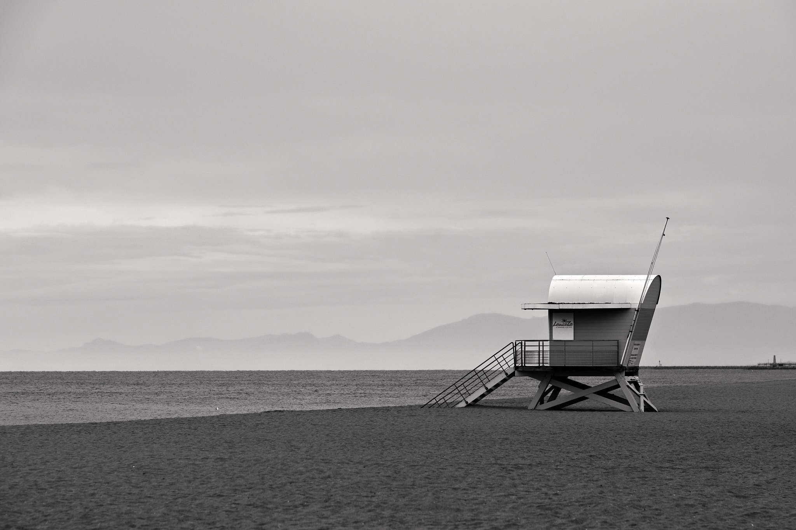
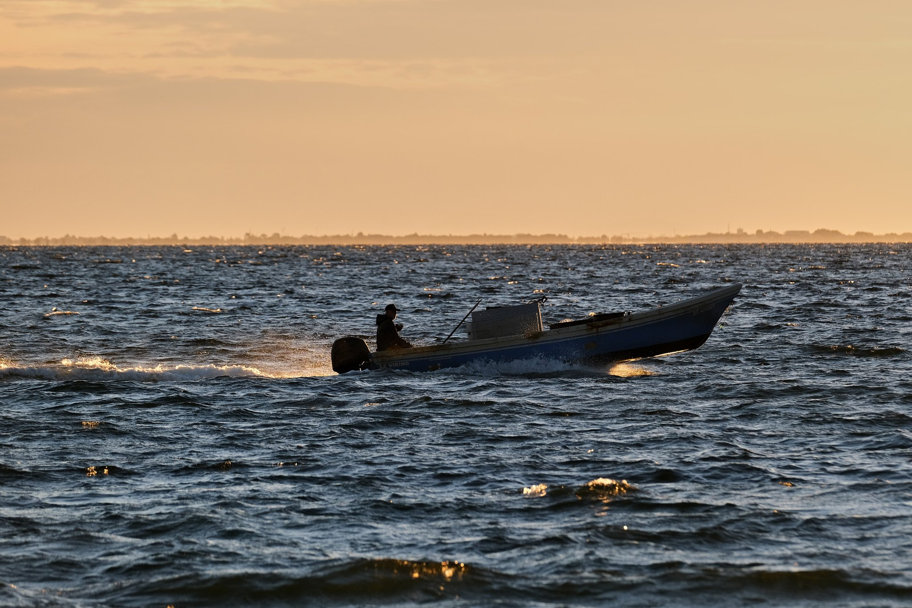
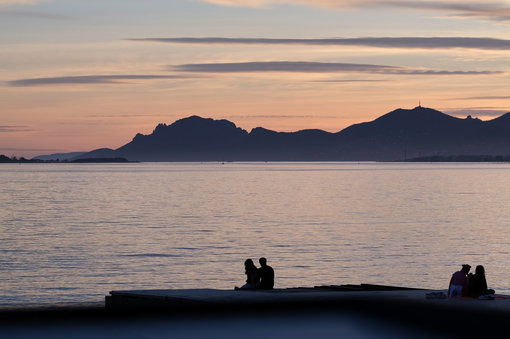
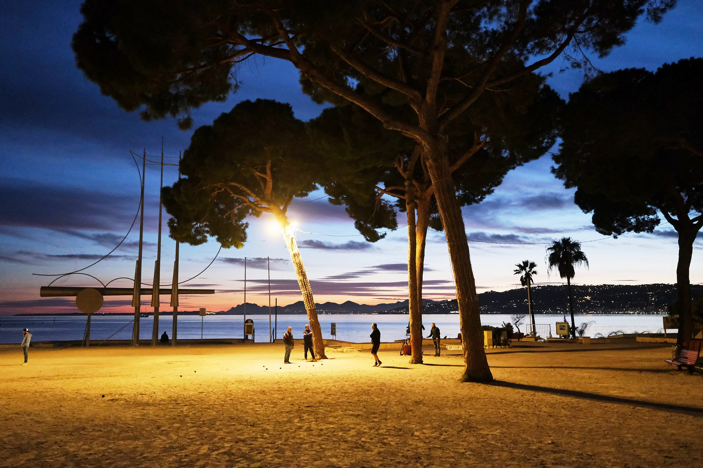
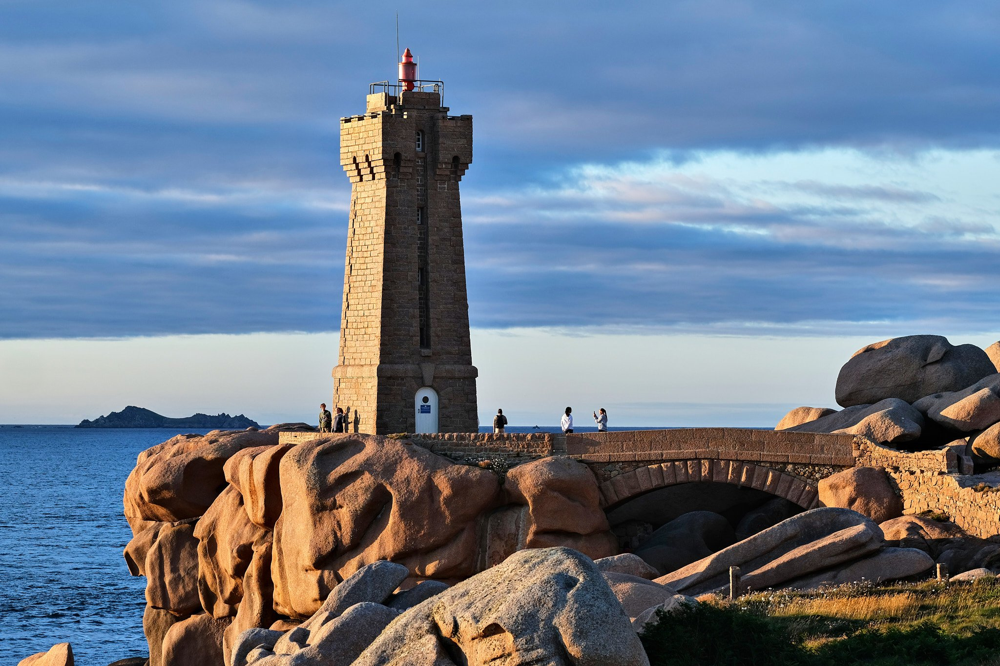
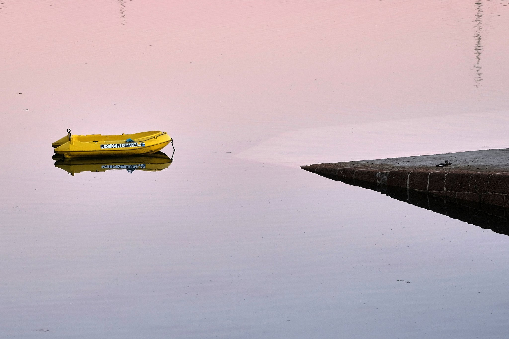
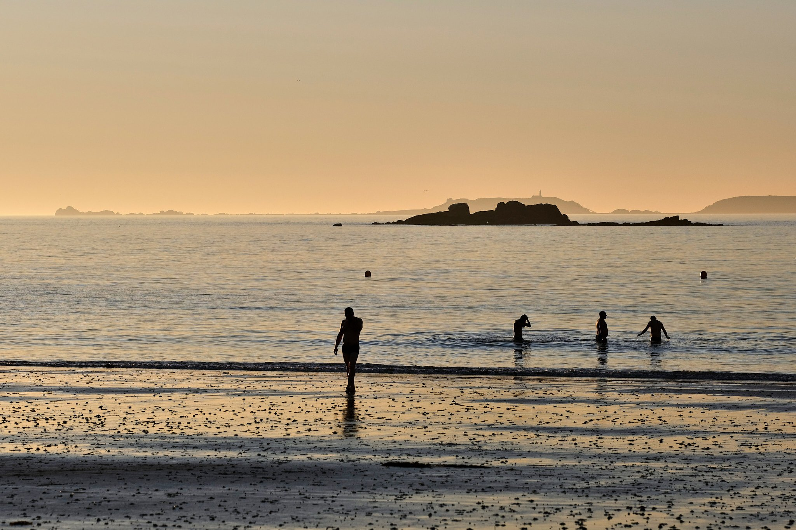
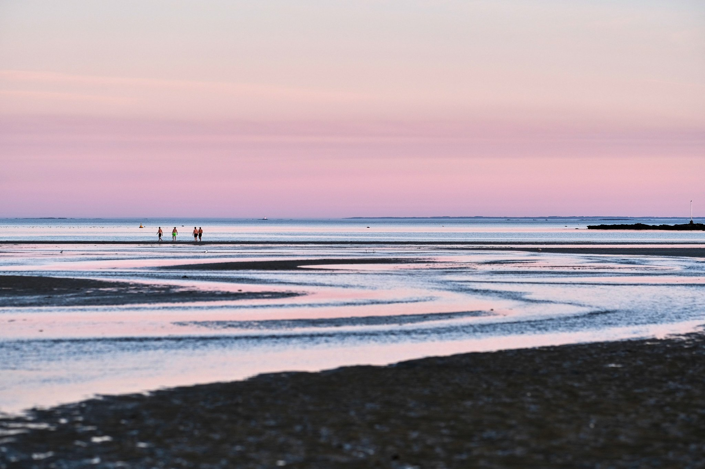

Aude- ISO 160 1/350s f/3.6 90mm - FUJIFILM XS-10

Sète (34)- ISO 320 1/900s f/5.6 211mm - FUJIFILM XS-10

Juan les Pins (06) - ISO 160 1/280s f/2.2 90mm - FUJIFILM XS-10

Juan les Pins (06) - ISO 3200 1/60s f/1.4 18mm - FUJIFILM XS-10

Bretagne - ISO 160 1/450s f/4 90mm - FUJIFILM XS-10

Bretagne - ISO 200 1/250s f/2 90mm - FUJIFILM XS-10
 Bretagne - ISO 400 1/250s f/2 90mm - FUJIFILM XS-10
Bretagne - ISO 400 1/250s f/2 90mm - FUJIFILM XS-10

Bretagne - ISO 320 1/1800s f/5.6 90mm - FUJIFILM XS-10

Bressols (82) - ISO 200 1/125 s f/2 90mm - FUJIFILM XT-5
 Bretagne - ISO 160 1/400s f/2.5 90mm - FUJIFILM XS-10
Bretagne - ISO 160 1/400s f/2.5 90mm - FUJIFILM XS-10
❮
 ❯
❯